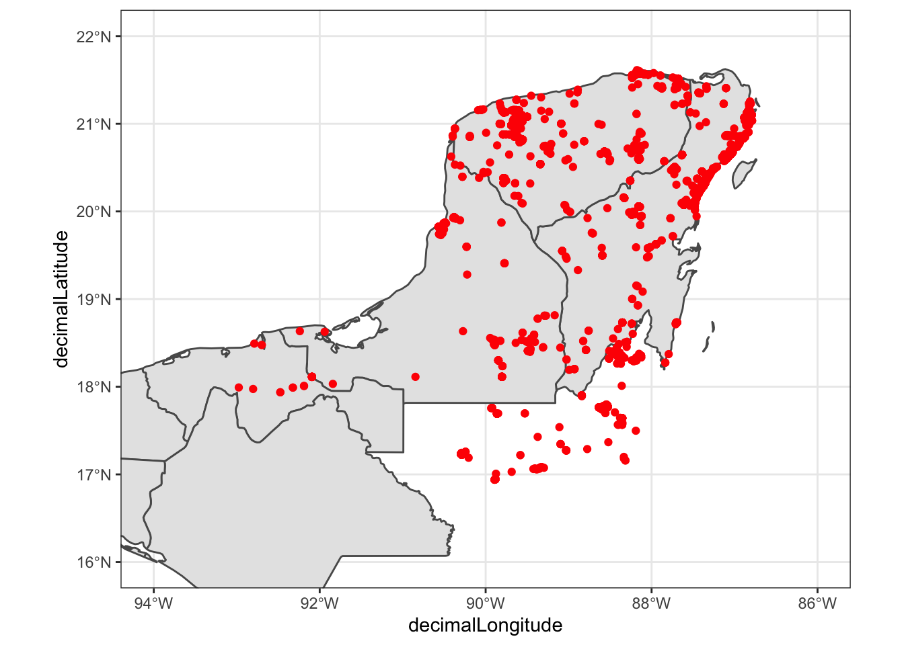

Session 5 Handling and Visualizing Spatial Data in R
5.1 Getting Environmental (Raster) data into R
Some of the data sources listed in the tables from the previous session can be accessed with the geodata package.
library(geodata)## Loading required package: terra## terra version 1.4.11##
## Attaching package: 'terra'## The following object is masked from 'package:dplyr':
##
## src## The following object is masked from 'package:tidyr':
##
## extract# get worldclim data for mexico at 0.5 minutes
# this fails for me on Mac Mojave because of a certification issue. Lame.
# But I can download it directly
#mex_tmin <- worldclim_country("Mexico", "tmin", res = 0.5, path = "/tmp")
#worldclim_country("Mexico", "tmax", res = 0.5, path = "/tmp")
# After downloading
library(terra)
#mex_tmin <- rast("~/Downloads/MEX_wc2.1_30s_tmin.tif")
mex_tmax <- rast("~/Downloads/MEX_wc2.1_30s_tmax.tif")
#mex_prec <- rast("~/Downloads/MEX_wc2.1_30s_prec.tif")
#mex_bio <- rast("~/Downloads/MEX_wc2.1_30s_bio.tif")
#plot(mex_tmin)# looks reasonable, let's crop it:
yp_extent <- ext(c(-91, -86.5, 19.5, 21.75 ))
#yp_tmin <- crop(mex_tmin, yp_extent)
yp_tmax <- crop(mex_tmax, yp_extent)
#yp_prec <- crop(mex_prec, yp_extent)
#yp_bio <- crop(mex_bio, yp_extent)
plot(yp_tmax)That is all happy. Let’s put this into a data folder somewhere
dir.create("data/spatial/worldclim", recursive = TRUE, showWarnings = FALSE)
writeRaster(yp_tmax, "data/spatial/worldclim/tmax.tif", overwrite = TRUE)5.2 Playing around with the Yucatan Jay
library(lubridate)##
## Attaching package: 'lubridate'## The following objects are masked from 'package:terra':
##
## intersect, union## The following objects are masked from 'package:base':
##
## date, intersect, setdiff, unionlibrary(tidyverse)
yjay_full <- read_tsv("data/spatial/Cyanocorax-yucatanicus.tsv.gz")## Warning: One or more parsing issues, see `problems()`
## for details## Rows: 25135 Columns: 50## ── Column specification ───────────────────────────────
## Delimiter: "\t"
## chr (31): datasetKey, occurrenceID, kingdom, phylu...
## dbl (14): gbifID, individualCount, decimalLatitude...
## lgl (2): coordinatePrecision, typeStatus
## dttm (3): eventDate, dateIdentified, lastInterpreted##
## ℹ Use `spec()` to retrieve the full column specification for this data.
## ℹ Specify the column types or set `show_col_types = FALSE` to quiet this message.# that is a big data set, with a lot of columns, and observations from
# a lot of different sources. Let's whittle it down to something
# that is easier to see.
yjay_thin <- yjay_full %>%
filter(
str_detect(collectionCode, "EBIRD"), # keep just the EBIRD-associated records
year == 2017 # from the year 2017
) %>%
select( # whittle it down to just a few columns of data
gbifID,
decimalLongitude,
decimalLatitude,
day,
month,
year,
individualCount,
stateProvince,
locality
)
# let's make a quick map:
library(rnaturalearth)
library(rnaturalearthdata)
library(sf)## Linking to GEOS 3.8.1, GDAL 3.2.1, PROJ 7.2.1mex_states <- ne_states(
country = "mexico",
returnclass = "sf"
)
ggplot() +
geom_sf(data = mex_states) +
geom_point(data = yjay_thin, aes(x = decimalLongitude, y = decimalLatitude), colour = "red") +
theme_bw() +
coord_sf(xlim = c(-95, -85), ylim = c(12, 22))Cool. Let’s focus on that in the core area:
ggplot() +
geom_sf(data = mex_states) +
geom_point(data = yjay_thin, aes(x = decimalLongitude, y = decimalLatitude), colour = "red") +
theme_bw() +
coord_sf(xlim = c(-94, -86), ylim = c(16, 22))
Cool. Now, it might be fun to look at collection dates.
ggplot() +
geom_sf(data = mex_states) +
geom_point(data = yjay_thin, aes(x = decimalLongitude, y = decimalLatitude), colour = "red") +
theme_bw() +
coord_sf(xlim = c(-94, -86), ylim = c(16, 22)) +
facet_wrap(~month)5.3 How about population densities?
library(geodata)
#pop <- population(2020, 0.5, path = "/tmp")
# the above fails because of the certificate issues on my laptop, but
# the error message gives me the URL:
pop_url <- "https://biogeo.ucdavis.edu/data/geodata/pop/gpw_v4_population_density_rev11_2020_30s.tif"
# so we can just download that from a browser and then read it
pop <- rast("~/Downloads/gpw_v4_population_density_rev11_2020_30s.tif")
yp_pop <- crop(pop, yp_extent)
plot(yp_pop)OK, that is pretty cool.
5.4 Now, How about finding roads?
The NYU Faculty Archive has a great repository of street shapefiles by province in Mexico. Here is the link for the page for Yucatan: https://archive.nyu.edu/handle/2451/37126
And this downloads the zipped shapefile: https://archive.nyu.edu/bitstream/2451/37126/1/nyu_2451_37126.zip
After download that and unzipping it we get:
#yuc_roads <- st_read("~/Downloads/nyu_2451_37126/yuc_eje_vial.shp")Cool. What do we have in there?
#yuc_roads %>%
# count(TIPOVIAL)Stuff here.
Marius and I brainstormed on this. We will do an example
that involves the Yucatan Jay (or, better yet, ask Richard
if a more interesting/iconic species is available). ECA has downloaded
occurrences from GBIF (3 Mb compressed) and has put them
into data.
We can use that and some of the raster data and some
vector data to do a little exploration of how to use the
sf package in combination with ggplot2.
Also, some filtering in the tidyverse.
Ideas:
- Do some filtering of the data set (tidyverse reprise)
- Talk about lubridate for dealing with dates and times
- facet wrap over months to look at occurrences, etc.
- Some very light geometrical operations, for example get all the observations within X km of some features (like highways).
- Explore the use of different raster backgrounds.